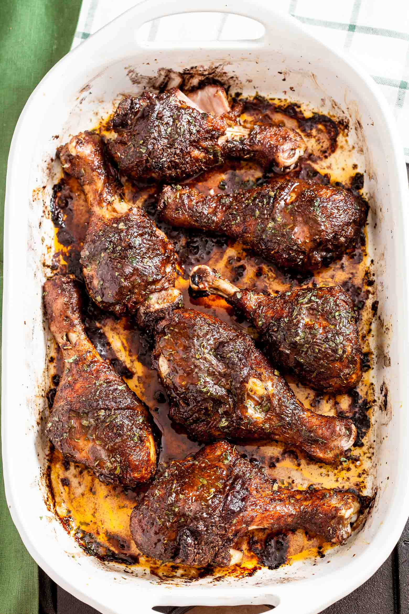

Jerk Chicken

Description
Here I will showing you how to make one of the most popuar dish that is cooked in my country, Jerk Chicken!
Ingredients
- 2 (3 1/2 to 4-pound) chickens, quartered
- 1 tbsp maggi chicken flavor seasoning
- 1 tbsp onion powder
- 1 tbsp garlic powder
- 1 tablespoon black powder
- 2 cloves garlic
- 1 cup jerk sauce
- 2 tbsp olive oil
Steps
- Mix salt, allspice, brown sugar, onion powder, garlic, nutmeg, black pepper, ginger, cayenne pepper, cinnamon, and thyme in a large bowl; add chicken pieces and toss to coat with seasoning mix. Cover and marinate in the refrigerator, 2 to 4 hours.
- Preheat the oven to 350 degrees F (175 degrees C). Pour vegetable oil into a 9x13-inch baking dish.
- Place chicken pieces skin-side up into the baking dish. Bake in the preheated oven until juices run clear and chicken is no longer pink near the bone, 1 hour 20 minutes. An instant-read thermometer inserted near the bone should read 165 degrees F (74 degrees C).
- Turn the oven on to broil, and cook until the skin crisps, 2 to 5 minutes.